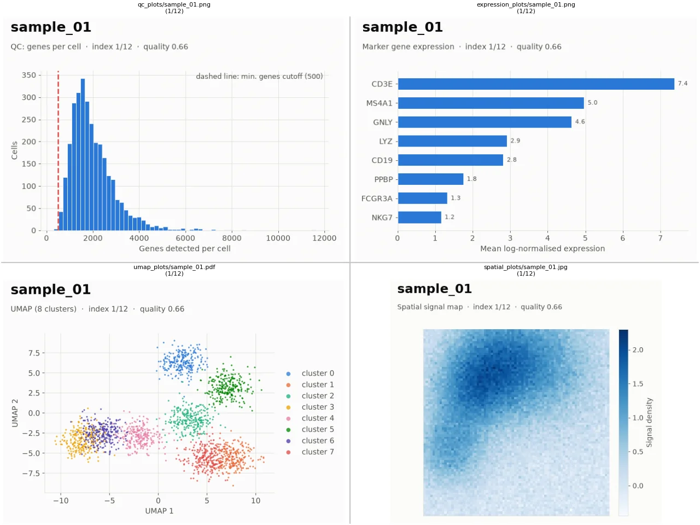
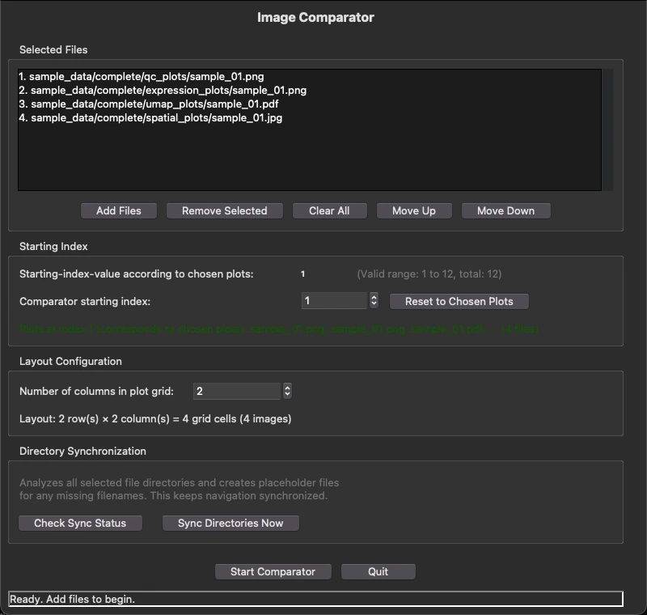
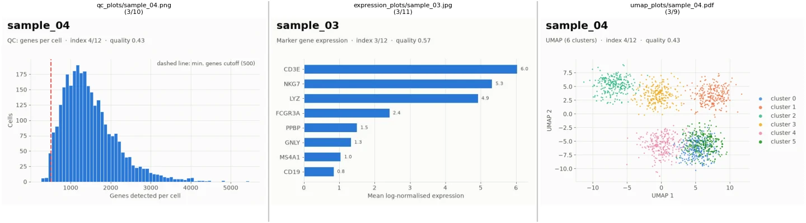
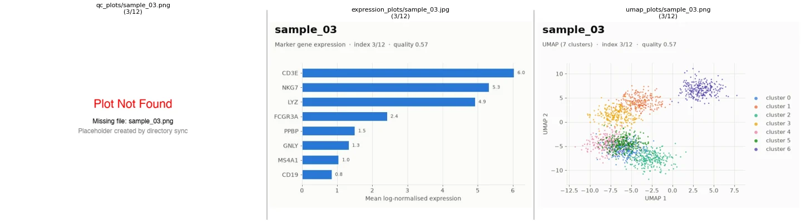
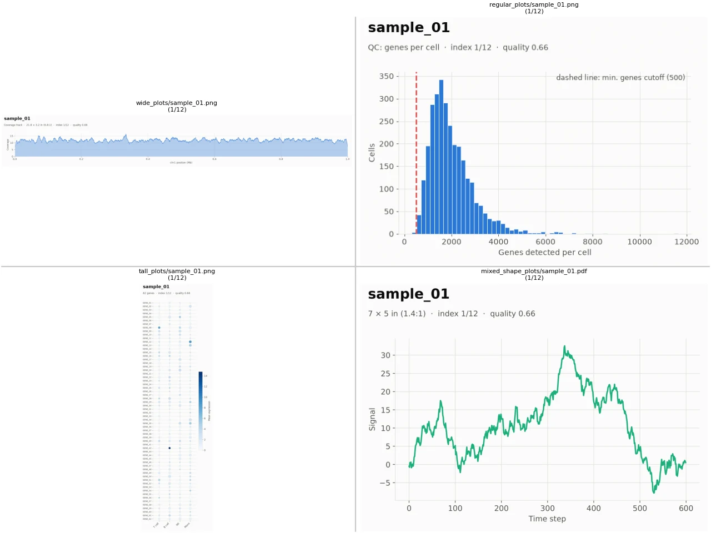
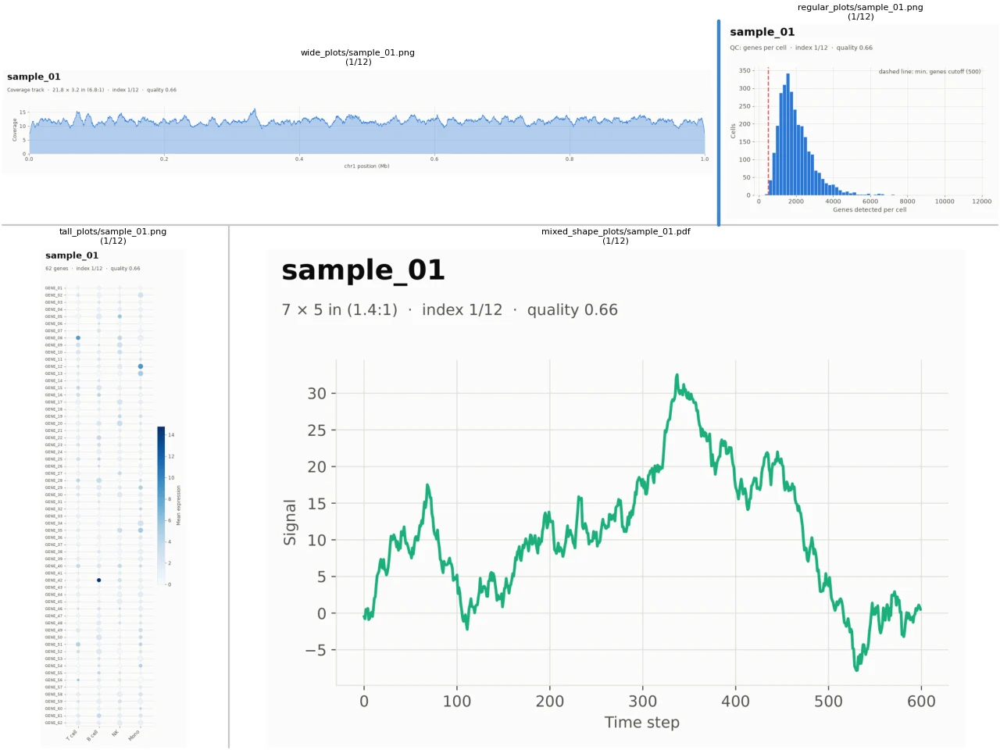
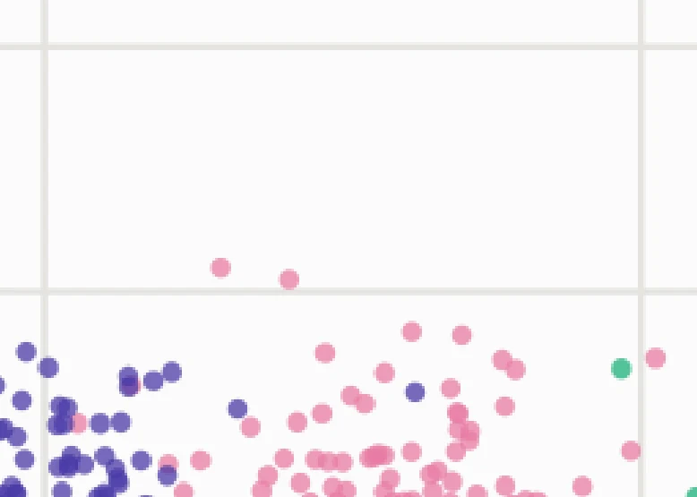
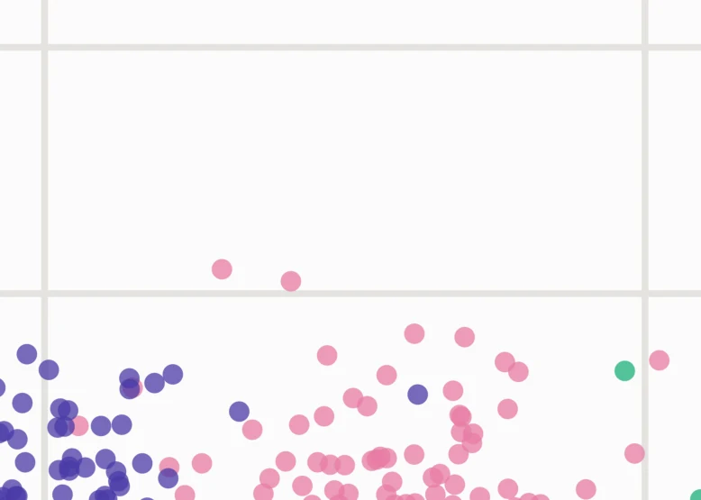

image-comparator shows matching plots from several folders in one grid. Press ↓ and every panel moves to the next sample at the same time.
pipx install image-comparator

An analysis pipeline often writes one plot per sample into a separate folder for each plot type. Reviewing them means opening qc_plots/sample_07.png, then umap_plots/sample_07.pdf, then spatial_plots/sample_07.jpg, and doing it all again for sample 8. image-comparator puts each folder in its own panel and keeps the panels on the same sample while you step through with the arrow keys.
Files are matched by their position in each folder after sorting by name, so name plots by sample (the plot type is already in the folder name). PNG, JPEG, TIFF, BMP, GIF and PDF are supported, and can be mixed.
Any time you have the same set of things plotted several ways, or the same plots produced several times.
Check each sample's quality metrics alongside its downstream analysis, so a strange cluster can be traced back to a poor-quality sample.
qc_plots/ umap_plots/ spatial_plots/
Compare figures from two versions of a pipeline, or before and after a parameter change, to see which samples it actually affected.
results_v1/figures/ results_v2/figures/
Put the same diagnostic plot from several runs (settings, seeds, checkpoints) in one grid and scan through every input.
run_lr0.01/plots/ run_lr0.001/plots/ run_lr0.0001/plots/
Hundreds of samples to check by eye? Lay out the plot types you need, then hold ↓. Upcoming PDFs are rendered in the background so each step is quick.
sample_001 … sample_480
What each part of the app is for, and when you'd reach for it. All screenshots are produced by the app from the example data in the repository's sample_data/ folder.
Click Add Files and choose one plot from each folder you want to compare. The app finds every other plot in those folders, sorts them, and starts at the plots you picked.

↓ shows the next sample in every panel, ↑ the previous one. The window title shows where you are (e.g. Index 4/12), and each panel's title shows its file name and position in its folder.
The PDFs for the next and previous steps are rendered in the background while you look at the current one, so navigating stays fast even with heavy PDFs.
qc_plots/ umap_plots/ ├── sample_01.png ├── sample_01.pdf ├── sample_02.png ├── sample_02.pdf └── sample_03.png └── sample_03.pdf
| Press | Left panel | Right panel |
|---|---|---|
| start | sample_01.png | sample_01.pdf |
| ↓ | sample_02.png | sample_02.pdf |
| ↓ | sample_03.png | sample_03.pdf |
Because files are matched by position, a folder with a missing sample shifts everything after it. In the Out of sync view, the middle panel shows sample_03 while the others have already moved on to sample_04.
sample_02.png and sample_02.pdf count as the same sample.

Plots don't all share a shape. A genome coverage track is very wide, a dot plot of 60 genes is very tall, and a legend needs hardly any room. Drag the gap between two panels to move the boundary between them.


Press O and drag a rectangle to zoom into a plot, or P to drag it around. H resets every panel, and D returns to resizing mode.
PDFs are vector graphics, so when you zoom into one, the visible region is re-rendered at screen resolution a moment after you stop. Small text, thin lines and overlapping points stay crisp at any zoom.


In the plot window. The toolbar buttons at the bottom of the window do the same as O, P and H.
| Key | Action |
|---|---|
| ↓ / ↑ | Next / previous sample in every panel |
| D | Default mode: drag the gaps between panels to resize them |
| O | Toggle zoom mode: drag a rectangle to zoom in |
| P | Toggle pan mode: drag to pan, right-drag to zoom |
| H | Reset zoom and pan of all panels |
| E | Make all panels equally sized again |
| Q / Esc | Quit |
image-comparator is a desktop app for macOS, Linux and Windows. It needs Python 3.10 or newer with tkinter. pipx installs it as a standalone command.
brew install pipx python-tk
sudo apt install pipx python3-tk
py -m pip install --user pipx
Homebrew's and Debian's Python come without tkinter, which the app's windows are built with; python-tk / python3-tk add it.
pipx install image-comparator pipx ensurepath # makes the command available; restart your terminal afterwards
No Python 3.10+ on your system? pipx install image-comparator --python 3.13 --fetch-python=missing downloads a standalone Python first.
image-comparator
To try it out, clone the repository and open plots from sample_data/complete/, or sample_data/with_gaps/ to try directory sync.